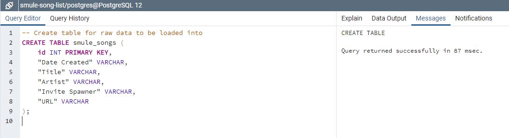
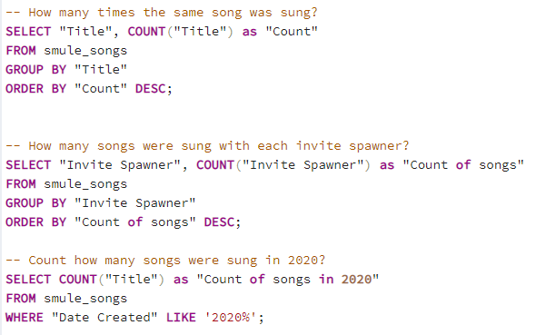

After singing togehter with the same people for a few years, I couldn't help thinking, 'How many songs have we sung together in total? What have we sung so far?' Unfortunately, Smule -just like any other social media- does not really give you a year-end report like how you would get your credit card usage statement😂
To get the songs listed on the page in Smule is quite endless. You have to scroll through the page. As you scroll down, the page will give more content until you hit the first song you have ever sung. Imagine there's over 1000s of songs on your page and the page shows only 25 at a time...and your internet suddenly crashes☠ You get the idea, right?
Now let's say you were really passionate about finding the list of all songs and scrolled through those 100s of pages (FYI: Even I don't do that!), you will probably have to copy + paste the specific item on the page into some sort of a spreadsheet field by field and one by one. You can pay an intern to do this for months. Or just let the code do it for you🤓
Yes, I am very obssessed with getting those data! What could be better than using my own singing data to demonstrate my coding skills AND my personal life interest!?
I want to know what does my singing activity look like since I started using this app in 2016. ( •̀ ω •́ )✧
All this work just for that? YEAH!
I want to be respectful of my singing buddies' privacy, so I will redact everything that can trace back to them. All those years of working in clinical research and patient's confidentiality sure drilled me good with PII redaction skills 😉
Trying to get my hands on the data was actually the hardest part of this project. Here's my journey:
From googling around, I finally got my hands on the URL where I can get the data I need in a json format. Bless those beautiful souls for sharing the URL on stackoverflow and Sing Salon.
STARTER URL ACQUIRED✨https://www.smule.com/s/profile/performance/<username>/sing?offset=<#>
Let the cherry-picking begins!
I actually created a project on my GitHub that is dedicated for extracting data [and transforming too].
I am intentionally redacting more than just the values, getting a bit paranoid 😅
Unfortunately, the code that I shared for Data Extraction does not always work on the first go. I was able to run the whole notebook in one-go one day, the 2nd loop got an error on another. Also, each time I ran the code, I will have to wait at least 30 minutes before I ran the same request code and I would not be able to have access to Smule page for similar amount (got a 418 Error Code). Until now, I still couldn't figure out how to bypass the rate limitation on making request for the json data. I added errors & exceptions which seemed to work, but later on gave the same result as the code without try-except. I tried adding time.sleep(2) and that didn't do anything either.
As a last resort, instead of making two requests (2 usernames, 2 URLs) in the same notebook I made only 1 request on just 1 username. I exported the output to csv, waited 30 minutes to restart & rerun the code with the 2nd username, and exported that 2nd csv. Then, I appended the two dataframes and reset the index (need to do this for SQL database) before exporting that final dataframe to csv to be loaded. A whole set of jupyter notebooks were created for this alternative method. Yeah, I know. I AM obssessed with getting these data. Imagine how many 30-min-wait time I had to do while debugging... 😭
Most of the data returned is actually pretty clean, but I want the data to get spit out in a certain way. I tweaked the output of the two fields: date ("created_at") and web URL ("web_url").
Instead of having the date and timestamp (stalkable metric right there 😱), I only want a return of just the date:
The web URL returned is only part of the url. I want a full URL:
I did an extra clean-up step to replace the real date with a fake one and to also replace the actual username with just '-username-' for demo purpose.
Once all the data is in the format I want, it's time for pandas to shine!
I ran the code to import the dataframe to csv. So I can show off my SQL querying skills!
NICE TABLE ACQUIRED✨Again, I use postgreSQL as my database to run my SQL query. I created a database within pgAdmin before creating a table with the following code before I imported my csv:
Once the data has been dumped, it's time to look at some numbers and make some decisions for the future!
Here are some of the simple queries I ran:
Since the day I started singing (24-SEP-2016) until the date the data is extracted (12-SEP-2020), I have sung a total of 1858 songs.
| Collaboration type | Number of Songs |
|---|---|
| Inviting | 869 |
| Joining | 989 |
| Invitation Spawner | Number of Songs |
|---|---|
| Buddy1 | 110 |
| Buddy2 | 56 |
| Buddy3 | 54 |
| Buddy4 | 44 |
| Buddy5 | 39 |
| Buddy6 | 36 |
| ... | ... |
| StrangerY | 1 |
| StrangerZ | 1 |
There are 869 recordings I created, either a solo or a duet for others to join. I have joined others on 989 songs.
Out of those 989 songs, I have sung with 185 different smule-users. I sang as many as 100s songs with 1 person and as little as 1 song.
Now, let's just look at my own singing activity for these past years:
| Year | Number of Songs |
|---|---|
| 2016 | 106 |
| 2017 | 746 |
| 2018 | 453 |
| 2019 | 327 |
| 2020 | 226 |
Yearly
| Month | Number of Songs |
|---|---|
| 1 | 203 |
| 2 | 182 |
| 3 | 152 |
| 4 | 148 |
| 5 | 173 |
| 6 | 186 |
| 7 | 159 |
| 8 | 139 |
| 9 | 116 |
| 10 | 143 |
| 11 | 139 |
| 12 | 118 |
Monthly
Let's look at some of the songs that I sang most frequently next.
From looking at the resulted table, there are 1071 songs with unique titles. Note that some of the songs have the same name but because they have a unique title (depends on how the song being uploaded and whether it's acoustic, piano, guitar, etc.) within the app, they are being count separately.
Sarishinohara is pretty easy to sing and a very popular one, I could see why I sang it so much. Kokoronashi 【Short.】 is also popular, though the short version only. The note is pretty high! My favortie from these list is actually just HEAVEN and Shiwa. Oh, those URLs don't lead to my recording🤭
| Song Title | Frequency |
|---|---|
| Sarishinohara | 14 |
| Kokoronashi 【Short.】 | 14 |
| Hitorinbo Envy | 9 |
| HEAVEN | 9 |
| Tokyo Teddy Bear | 8 |
| Song Title | Frequency |
|---|---|
| Magnet | 8 |
| Shiwa (しわ) -Romaji- | 8 |
| Ai no Scenario (TV Size) | 8 |
| Zoetrope | 8 |
| Yomosugara Kimi Omou [夜もすがら君想ふ / Romaji] | 8 |
| Song Title | Frequency |
|---|---|
| The immoral memory, The lost memory | 7 |
| only my railgun | 7 |
| Sayoko [Original] | 7 |
| WAVE | 7 |
| Acute | 7 |
That is a lot of singing, I guess? At this point, I can probably say I know how to sing over 1000 songs!
And yes, I am quite an otaku, based on the types of songs I sing 😉